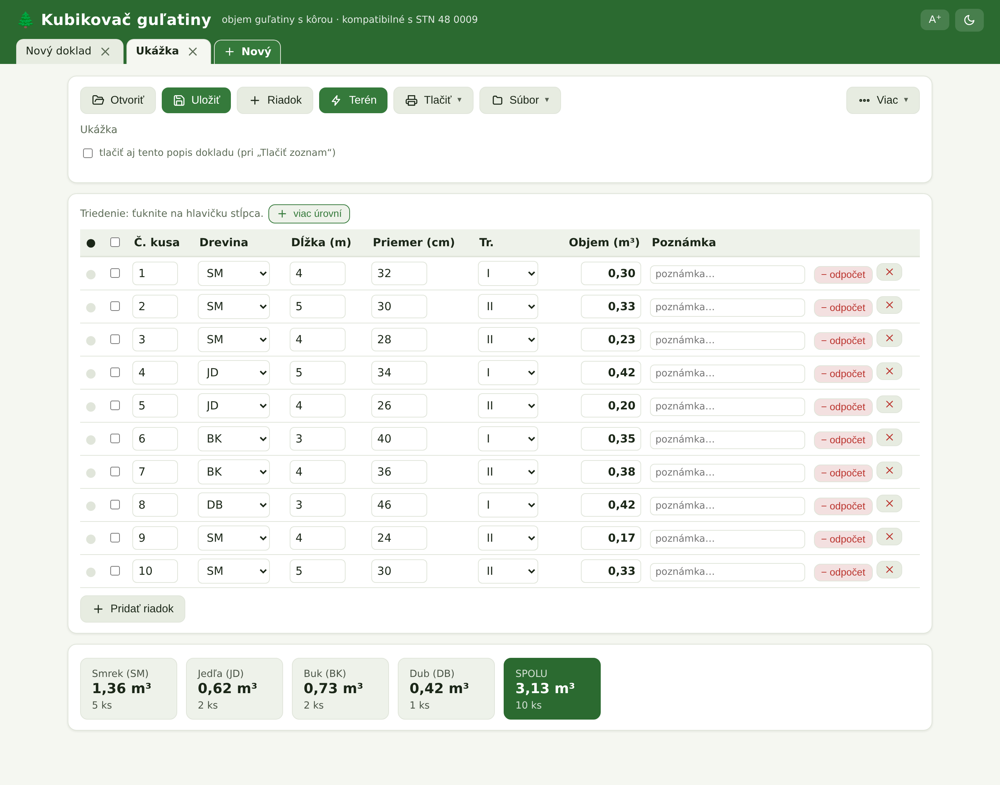
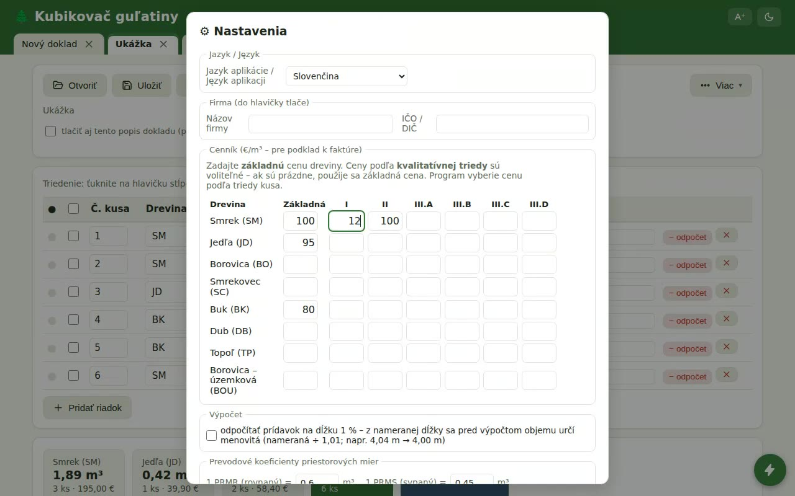
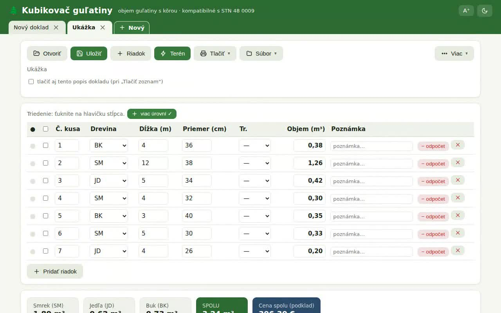
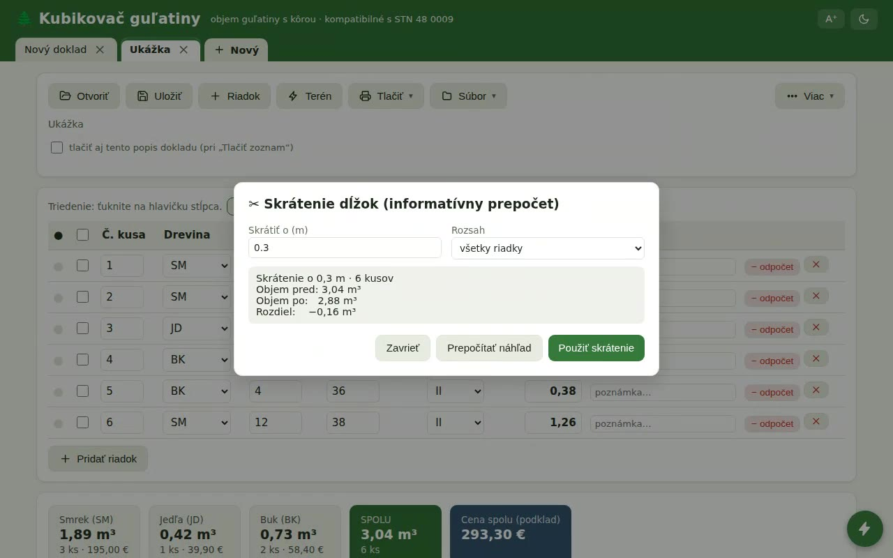
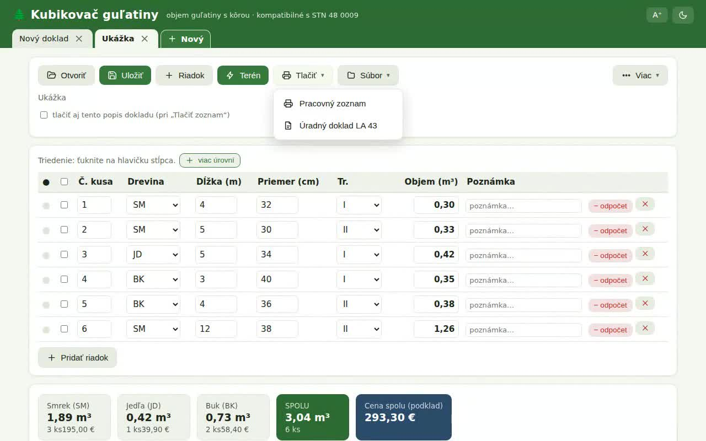

Od nameraného kusa po úradný doklad za pár minút
Kubikovač spočíta objem guľatiny s kôrou, pripraví doklad o pôvode dreva LA 43, odpočty aj cenu. Beží v kancelárii aj v lese na mobile — a úplne bez internetu.
- 7 krokov pracovného postupu
- 24 funkcií v prehľade
- kompatibilné s STN 48 0009
Sedem krokov od merania po doklad
Takto vyzerá bežná práca s programom. Kliknutím obrázok zväčšíte.
Zadáte kusy, objem sa počíta sám
Do prehľadnej tabuľky zapíšete drevinu, dĺžku a priemer. Objem každého kusa aj súčty program dopočíta okamžite — s kôrou, kompatibilne s STN 48 0009.
- Smrek, jedľa, borovica, smrekovec, buk, dub, topoľ a 15 príbuzných drevín (javor, hrab, lipa, jaseň, breza, osika a ďalšie)
- Ľubovoľná dĺžka — od tenkej guľatiny po mohutné kmene, počíta vlastný algoritmus
- Automatické číslovanie kusov, nový riadok si pamätá drevinu

Terénny režim na mobile — offline
V lese prepnete na terénny režim: veľké polia, zadáte dĺžku a priemer, ťuknete + a kus je zapísaný. Signál netreba — všetko beží v telefóne.
- Veľké dotykové tlačidlá — do rukavíc aj na ostrom slnku
- Bežiaci súčet kusov a objemu, potvrdenie posledného kusa
- Voliteľné polia navyše: číslo kusa, trieda, poznámka

Hniloba a odrezky — hrubý aj čistý objem
Ku kusu pridáte odpočet (hnilobu, odrezok) a program ukáže hrubý objem, odpočet aj čistý objem — presne to, čo sa platí. Všetko ostáva zdokladované.
- Ľubovoľný počet odpočtov na kus, s poznámkou
- Odpočet z rozmerov alebo ručne zadaným objemom
- Kontrola preklepov — záporný či prehnaný odpočet program zachytí

Úradný doklad LA 43 na jeden klik
Vyplníte hlavičku a program vytlačí alebo uloží do PDF Doklad o pôvode dreva LA 43 — na šírku aj na výšku. Viete vytlačiť aj samostatný doklad pre každú drevinu.
- Tlač na papier alebo PDF — na šírku aj na výšku (3 stĺpce)
- Samostatný LA 43 pre jednotlivú drevinu jedným prepínačom
- Rýchly doklad pre naloženú drevinu — označíte kusy a vytlačíte len tie


Jeden doklad, dve rozloženia — na šírku aj na výšku
Cenník podľa triedy — podklad k faktúre
Zadáte ceny €/m³ pre drevinu aj kvalitatívnu triedu (I, II, III.A–D). Program vyberie správnu sadzbu pre každý kus a spočíta cenu celého dokladu.
- Základná cena na drevinu + ceny podľa tried
- Cena za doklad aj súhrnná štatistika naprieč dokladmi
- Export do CSV v slovenskom formáte — rovno do Excelu
- Palivové drevo: prevod m³ ↔ priestorový meter rovnaný (PRMR) a sypaný (PRMS) s cenou za zvolenú jednotku a celkovou sumou

Voliteľný prídavok na dĺžku 1 %
Meriate celé kusy aj s prídavkom? Program z nameranej dĺžky určí menovitú (nameraná ÷ 1,01 — napr. 4,04 m → 4,00 m) a z nej počíta objem.
- Dva režimy: najviac 10 cm na výrez, alebo 1 % z celej dĺžky
- Súhrn vždy ukáže, ktorý režim je aktívny — žiadne prekvapenia
- Skrátenie dĺžok o ľubovoľnú hodnotu — pre celý doklad či výber

Žlté upozornenie v súhrne — hneď vidno, že prídavok je zapnutý
Doklady v záložkách, archív a štatistiky
Pracujete na viacerých dokladoch naraz v záložkách. Uložené doklady nájdete v archíve s vyhľadávaním a štatistikou naprieč zákazkami.
- Viac otvorených dokladov, spojenie viacerých do jedného
- Triedenie na viac úrovní, výber kusov na samostatný doklad
- Automatické zálohy a obnova — o doklady neprídete
Krátke ukážky funkcií
Každá trvá do 15 sekúnd. Kliknutím ju prehráte zväčšenú.




Všetko, čo v programe nájdete
Kompletný prehľad funkcií — od výpočtu cez doklady až po štatistiky.
Kompatibilné s STN 48 0009
Objem guľatiny meranej s kôrou pre všetky bežné dreviny.
Terénny režim
Veľké polia, bežiaci súčet — rýchle zadávanie v lese.
Úradný doklad LA 43
Tlač aj PDF, na šírku aj na výšku, na jeden klik.
Rýchly doklad pre naloženú drevinu
Označíte kusy na aute a vytlačíte doklad len pre ne.
Samostatný doklad pre každú drevinu
Jedným prepínačom rozdelí LA 43 podľa drevín.
Skrátenie dĺžok
Skráti všetky či vybrané kusy o zadanú hodnotu s náhľadom.
Odpočty hniloby a odrezkov
Hrubý aj čistý objem po odpočte — všetko zdokladované.
Prídavok na dĺžku 1 %
Menovitá dĺžka z nameranej (÷ 1,01), max 10 cm alebo bez limitu.
Cenník podľa triedy
Ceny €/m³ na drevinu aj triedu I–III.D, cena dokladu.
Prevod na priestorové metre
Palivové drevo: m³ ↔ PRMR/PRMS s cenou a celkovou sumou; koeficienty podľa dohody.
Súčty a štatistiky
Po drevinách aj celkovo, naprieč všetkými zákazkami.
Triedenie a výber na viac úrovní
Podľa dreviny, dĺžky, priemeru, objemu — aj kombinovane.
Spojenie viacerých dokladov
Viac uložených dokladov spojíte do jedného.
Záložky a archív
Viac dokladov naraz, archív s vyhľadávaním a zálohami.
Tmavý režim a veľké písmo
Čitateľné na slnku aj pre slabší zrak — jedným tlačidlom.
Windows · Android · Linux
Ten istý program všade, offline, doklady prenositeľné.
Export a import JSON / CSV
Doklad uložíte do súboru a kedykoľvek načítate späť; CSV otvoríte rovno v Exceli.
Pracovný zoznam na tlač
Okrem LA 43 vytlačíte aj jednoduchý zoznam kusov — na sklad či do výroby.
Terén na mieru
V teréne si zapnete len polia, ktoré potrebujete — číslo kusa, triedu, poznámku.
Prenos z mobilu na počítač
Doklad z terénu uložíte do súboru a na PC ho otvoríte — bez prepisovania.
Automatické zálohy
Databáza sa priebežne zálohuje a pri poškodení sa sama obnoví z poslednej zálohy.
Ohlási novú verziu
Program pri štarte zistí novšiu verziu a ponúkne stiahnutie — dáta ostanú zachované.
Prehľad drevín a tabuliek
V programe vidíte, ktorá drevina sa počíta podľa ktorej objemovej tabuľky — napr. čerešňa podľa buka.
Slovensky aj poľsky
Jazyk ovládania prepnete v nastaveniach — slovenčina alebo poľština.
Vyskúšajte Kubikovač ešte dnes
Windows, Android aj Linux. Doklady sú uložené len u vás — offline, bez cloudu. Výpočet objemu guľatiny meranej s kôrou, kompatibilný s normou STN 48 0009.
Stiahnete a nainštalujete
Jedným kliknutím stiahnete verziu pre Windows, Android alebo Linux. Inštalácia je bežná — Ďalej, Dokončiť.
Vyskúšate 24 hodín zadarmo
Po spustení zadáte meno a e-mail a kliknete na Vyskúšať 24 hodín zadarmo. Program sa hneď odomkne — s plnou výbavou a bez záväzkov.
Objednáte licenciu
Keď sa vám program osvedčí, objednáte si licenciu priamo z programu alebo formulárom nižšie. Pošleme ju e-mailom a aktivujete ju jedným kliknutím. Funguje aj offline.